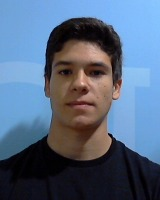
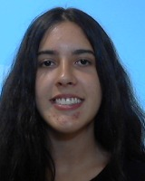
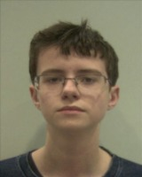
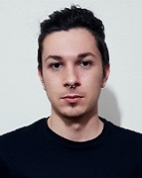
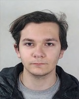

Master's Theses
2022
-
Human Feedback during Neural Networks Training
Pedro João Cruz Serrano e Silva (co-supervisor: Tiago Filipe Sousa Gonçalves)

-
Environment Detection for Railway Applications based on Automotive Technology (Internship at Continental)
João Malheiro Baptista Marcos da Silva
-
Phishing Detection with a Machine Learning Net (Internship at E-goi)
Ana Luís Carvalho Matos Bezerra (main supervisor: Prof Joaquim Pinto da Costa)
Bachelor's Projects
2022
-
Semantic Segmentation in Neural Networks using Iterative Visual Attention
Diana Raquel Teixeira e Silva (co-supervisor: Tiago Filipe Sousa Gonçalves)

-
Mobile App using Object Detection for Car Driving
Filipe Pinto Campos, Francisco Gonçalves Cerqueira, Vasco Marinho Rodrigues Gomes Alves

-
Internship at ANO
Bruno Campos Gomes

-
Internship at ANO
Rafael Fernando Ribeiro Camelo